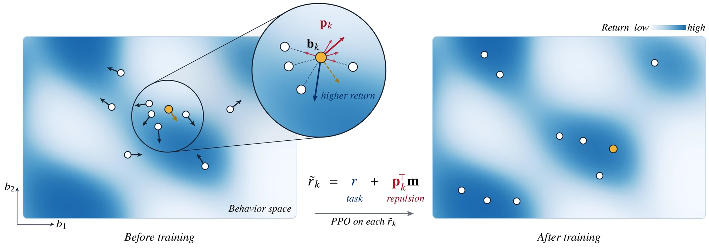
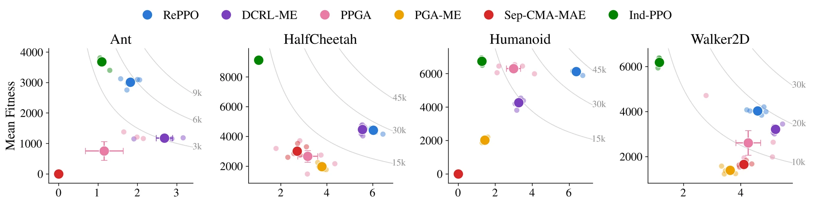
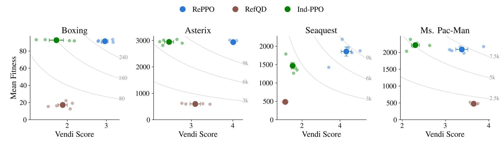
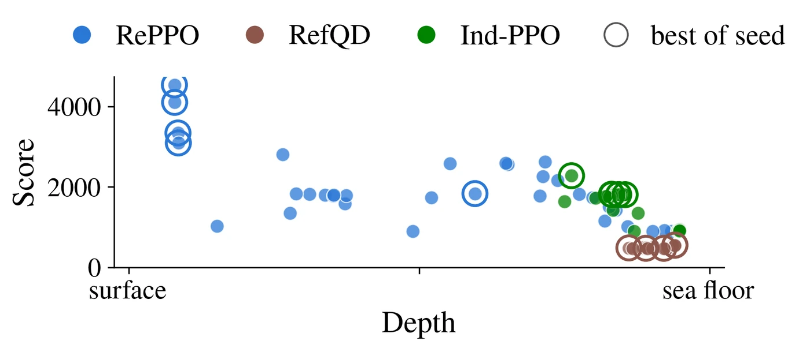
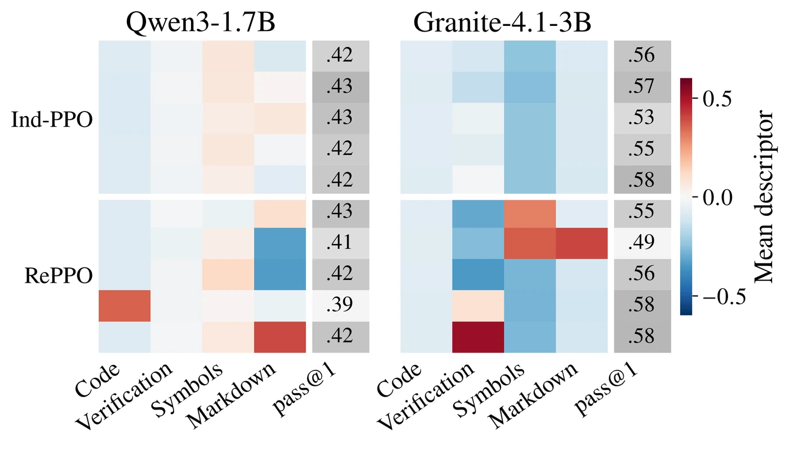
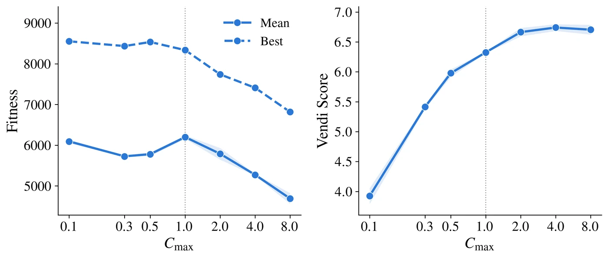

One task, many ways to solve it
The clips below are policies trained by RePPO on Brax locomotion tasks. Each one makes progress on the task in its own way. The bars under each clip show how much of the time each foot touches the ground. This is the behavior descriptor that RePPO diversifies.
Foot contact: left foot right foot
Foot contact: right foot left foot
Foot contact: front foot back foot
Foot contact: front-left front-right back-left back-right
The problem
Standard RL looks for one policy that maximizes expected return, even when a task admits qualitatively different solutions. Quality-Diversity RL (QD-RL) instead asks for a population of high-performing policies that differ along a user-defined behavior descriptor, such as a robot's foot-contact pattern or where an Atari agent plays. The descriptor states which kind of diversity is wanted and makes it an explicit part of the learning problem.
Most QD-RL methods organize the search around an archive in the style of MAP-Elites: behavior space is partitioned into cells, each cell keeps its best solution, and evolutionary operators, increasingly combined with RL gradients, fill it. The number of cells grows quickly with descriptor dimension and resolution, and every cell holds a full policy, which becomes impractical once policies are convolutional networks or language-model adapters. We therefore ask whether quality and diversity can be optimized directly over a compact population, with standard RL updates and no discretization of behavior space.
How RePPO works
A continuous objective over a finite population. We start from the Soft QD lower bound (Hedayatian & Nikolaidis, 2026). For policies with qualities \(f_n > 0\) (expected return) and descriptors \(b_n \in \mathbb{R}^d\),
The first term rewards individual quality. The second penalizes pairs of policies that are both good and behaviorally close, and the bandwidth \(\ell\) sets how far this interaction reaches. Diversity comes from interactions among a fixed number of members rather than from archive cells.
Population gradients are shaped rewards. Behavior cannot be differentiated through the environment. But when a descriptor is the expected sum of a per-step behavior signal \(m\), \(b(\theta) = \mathbb{E}\big[\sum_t \gamma^t m(s_t,a_t)\big]\), it has the same form as a return. Changing a policy's behavior in a direction \(v\) is then an ordinary policy gradient with reward \(v^{\top} m\). Differentiating \(S\) gives each policy a direction that points away from its nearby high-quality neighbors. RePPO computes this direction \(p_k\) from smoothed episode statistics, with a few stabilizers described in the paper. Each policy's shaped reward is
Then each member runs ordinary PPO. Each policy has a task critic and a behavior critic. Their advantages are combined with the weights \(p_k\) and fed to the usual clipped PPO update. One iteration:
- Collect on-policy rollouts for all N policies, recording task and behavior signals.
- Update each policy's smoothed return and descriptor, and compute \(p_k\) from the current population.
- Run PPO epochs for each policy with \(p_k\) held fixed.
Setting \(p_k = 0\) recovers N independent PPO runs, which we call Ind-PPO.
Results
We describe a population with two numbers. Its mean fitness (average return) measures quality. The Vendi Score of its descriptors measures diversity and can be read as the effective number of distinct behaviors. Their product, the quality-weighted Vendi Score (qVS), summarizes both. All numbers are computed after filtering out policies that fail at the task. Throughout, blue is RePPO and green is Ind-PPO.
Continuous control
On four Brax locomotion tasks, we compare RePPO with Ind-PPO and four archive-based QD-RL methods. RePPO attains the highest qVS on all four tasks. Ind-PPO finds strong policies that all behave alike. The archive-based methods cover behavior space, but most of their policies are weak. RePPO gets both quality and diversity.

Repulsion costs some mean fitness relative to Ind-PPO. The best policy of each RePPO population, however, stays close to the best Ind-PPO policy.
Atari from pixels
In four Atari games, RePPO and Ind-PPO train populations of 8 policies from pixels. Descriptors record where the agent plays or how it approaches the game. Archives of such large policies are costly, so the QD baseline here is RefQD, which shares one network body across its archive. RePPO keeps scores close to Ind-PPO's in every game while being more diverse than both baselines. RefQD's policies score far lower.

Diversity can also uncover strategies that independent training misses. In Seaquest, Ind-PPO and RefQD policies stay near the sea floor. Repulsion pushes some RePPO policies toward shallower water. In four of five seeds, the best RePPO policy operates just below the surface and outscores every Ind-PPO policy.

Fine-tuning language models
Finally, we fine-tune Qwen3-1.7B-Base and Granite-4.1-3B-Base on MATH problems with a correctness reward. Each population has 5 members, and each member is a LoRA adapter on a shared frozen model. Four descriptors capture how a solution is written: its use of Python code, self-verification, LaTeX symbols and markdown. To our knowledge, this is the first application of QD-RL to language-model fine-tuning.
RePPO's members develop distinct writing styles while nearly matching the accuracy of independent training. A simple classifier can tell which member wrote a solution about 80% of the time, against 20% by chance. Asking the base model for different styles through prompting changes its outputs far less and costs much more accuracy.
| Method | pass@1 | Vendi | Identifiability |
|---|---|---|---|
| Qwen3-1.7B | |||
| Base model | 0.320 | – | – |
| Prompt (corners) | 0.274 | 1.11 | 51% |
| Prompt (emphasis) | 0.275 | 1.08 | 44% |
| Ind-PPO | 0.423 | 1.04 | 41% |
| RePPO | 0.413 | 1.85 | 82% |
| Granite-4.1-3B | |||
| Base model | 0.233 | – | – |
| Prompt (corners) | 0.163 | 1.01 | 31% |
| Prompt (emphasis) | 0.194 | 1.03 | 37% |
| Ind-PPO | 0.560 | 1.03 | 53% |
| RePPO | 0.550 | 2.57 | 81% |
Table 1. Populations on the test problems (MATH-500, Minerva, OlympiadBench). Vendi is the Vendi Score of the members' mean descriptors. Identifiability is the accuracy of a classifier that names a solution's author from its text.

The two solutions below come from two Qwen3 RePPO members on the same problem. Both follow the same strategy and differ only in presentation.
RePPO · Member 1 — correct, 290 tokens
code −0.19 · verification −0.18 · symbols −0.74 · markdown −0.89
To solve the problem, we can treat the two boys as a single “block” or “unit”. This means we have 7 units to arrange: the block of 2 boys and the 6 girls. The number of ways to arrange these 7 units is 7! (7 factorial).
After arranging the 7 units, the 2 boys within their block can switch places. There are 2! (2 factorial) ways to arrange the boys within their block.
Therefore, the total number of ways to arrange the 6 girls and 2 boys such that the 2 boys sit next to each other is:
7! × 2!
Calculating 7!:
7! = 7 × 6 × 5 × 4 × 3 × 2 × 1 = 5040
Calculating 2!:
2! = 2 × 1 = 2
Multiplying these together gives:
7! × 2! = 5040 × 2 = 10080
Thus, the number of ways the 6 girls and 2 boys can sit in a row if the 2 boys insist on sitting next to each other is:
10080
RePPO · Member 3 — correct, 388 tokens
code +0.99 · verification −0.18 · symbols −0.86 · markdown +0.19
To solve this problem, we need to consider the boys as a single “block” since they insist on sitting next to each other. This means we can treat the two boys as one unit, and then we need to arrange this block along with the 6 girls.
Here’s the step-by-step reasoning:
1. Treat the two boys as a single unit. This means we now have 7 units to arrange: the block of two boys and the 6 girls.
2. The number of ways to arrange these 7 units is 7! (7 factorial), which is 7 × 6 × 5 × 4 × 3 × 2 × 1 = 5040.
3. Within the block, the two boys can switch places, so there are 2! (2 factorial) ways to arrange the two boys within their block, which is 2 × 1 = 2.
So the total number of arrangements is 7! × 2! = 5040 × 2 = 10080.
Let’s confirm this with Python code.
import math # Number of ways to arrange 7 units (1 block of 2 boys and 6 girls) arrangements_of_units = math.factorial(7) # Number of ways to arrange the 2 boys within their block arrangements_within_block = math.factorial(2) # Total number of arrangements total_arrangements = arrangements_of_units * arrangements_within_block print(total_arrangements)
10080
The total number of ways to arrange 6 girls and 2 boys in a row, with the 2 boys insisting on sitting next to each other, is 10080.
Problem: In how many ways can 6 girls and 2 boys sit in a row if the 2 boys insist on sitting next to each other? (answer 10,080). Each box's header gives the solution's four descriptors. The “output” block after the code is written by the model itself, since no interpreter is available.
The appendix of the paper shows more domains, including locomotion from pixels and LunarLander.
The quality–diversity knob
The repulsion cap \(C_{\max}\) sets how strongly diversity enters each update, and \(C_{\max} = 0\) recovers Ind-PPO. Up to the default of 1, raising it buys diversity at little cost. Beyond that, diversity saturates and fitness starts to drop.

When to use RePPO
- You already train with PPO. RePPO adds a behavior critic and a weight vector \(p_k\) per policy. Rollouts and the PPO update stay the same. The cost grows with the population size, not with the size of an archive.
- You can write a per-step behavior signal. Foot contacts, screen position, or features of a finished text all work, as long as the descriptor is the expected sum of such a signal. Sparse signals that arrive only at the end of an episode also work.
- You want a handful of strong, distinct policies, not exhaustive coverage of behavior space. For dense coverage with thousands of cells, archive-based methods remain better suited.
Citation
@article{hedayatian2026reppo,
title = {Repulsive Population Policy Gradients for Behaviorally Diverse Reinforcement Learning},
author = {Hedayatian, Saeed and Shah, Harsh and Mneimneh, Celine and Nikolaidis, Stefanos},
journal = {arXiv preprint arXiv:2610.36425},
year = {2026},
eprint = {2610.36425},
archivePrefix = {arXiv}
}